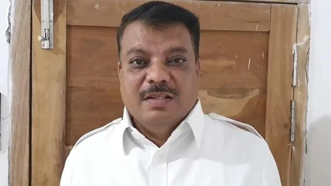

A FIR has been registered against Singhar, a three-time MLA from Gandhwani in Dhar, under sections 376 (rape), 377 (unnatural sex), and 498 a (domestic violence).
By Shruti Tomar Madhya Pradesh Congress MLA Umang Singhar was on Monday booked for raping, sodomising, physically and mentally assaulting his wife in Dhar district, the police said.
A FIR has been registered against Singhar, a three-time MLA from Gandhwani in Dhar, under sections 376 (rape), 377 (unnatural sex), and 498 a (domestic violence) of the Indian Penal Code, based on the complaint filed by his 38-year-old wife, Dhar superintendent of police Aditya Pratap Singh said.